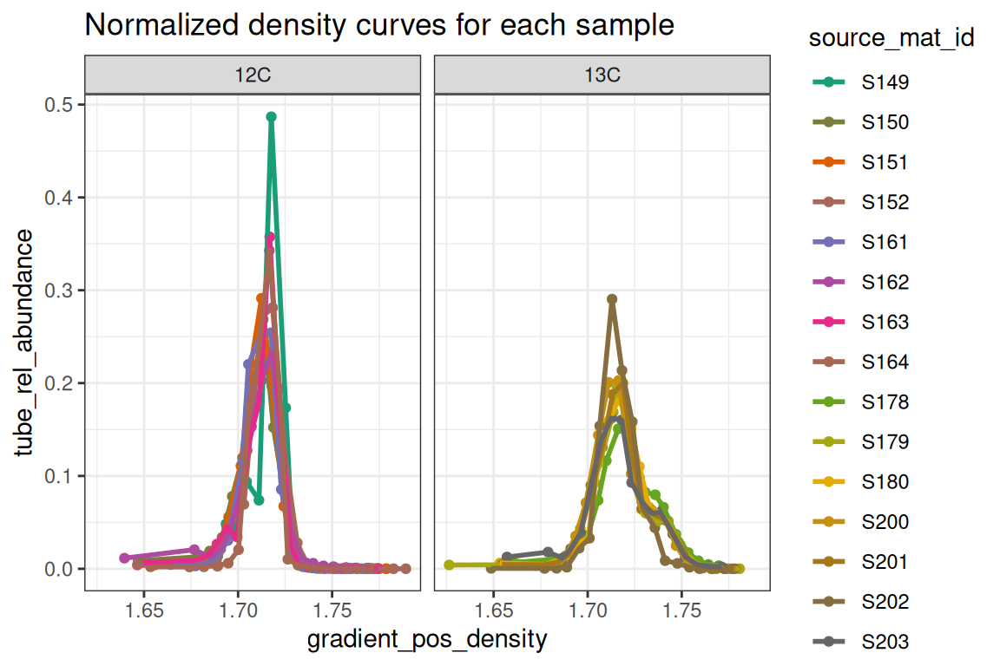
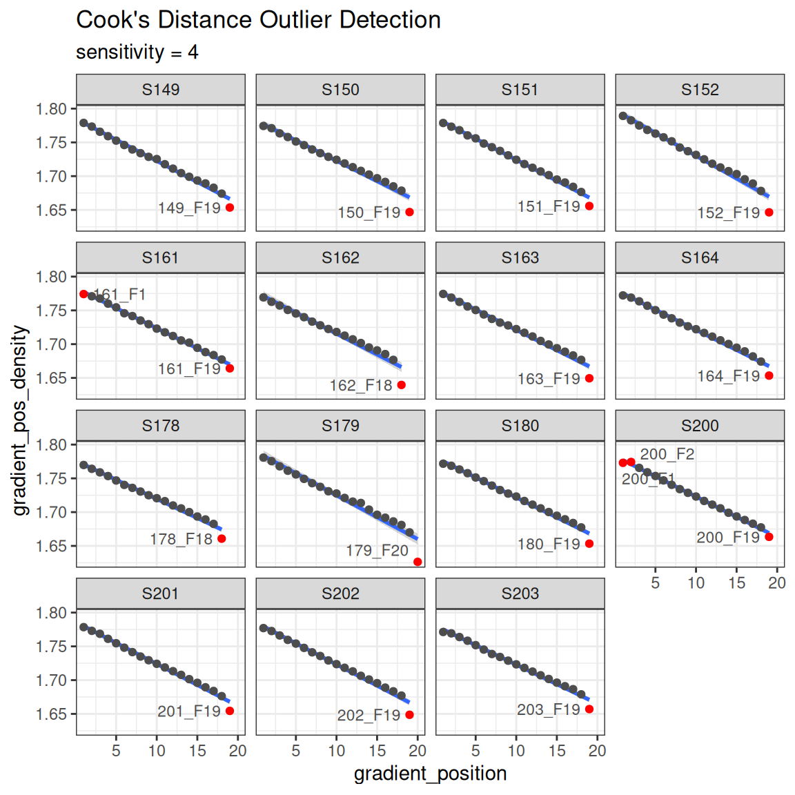
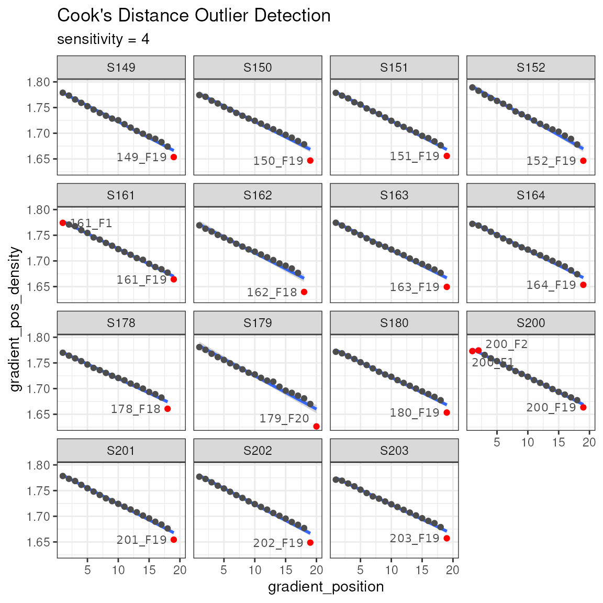
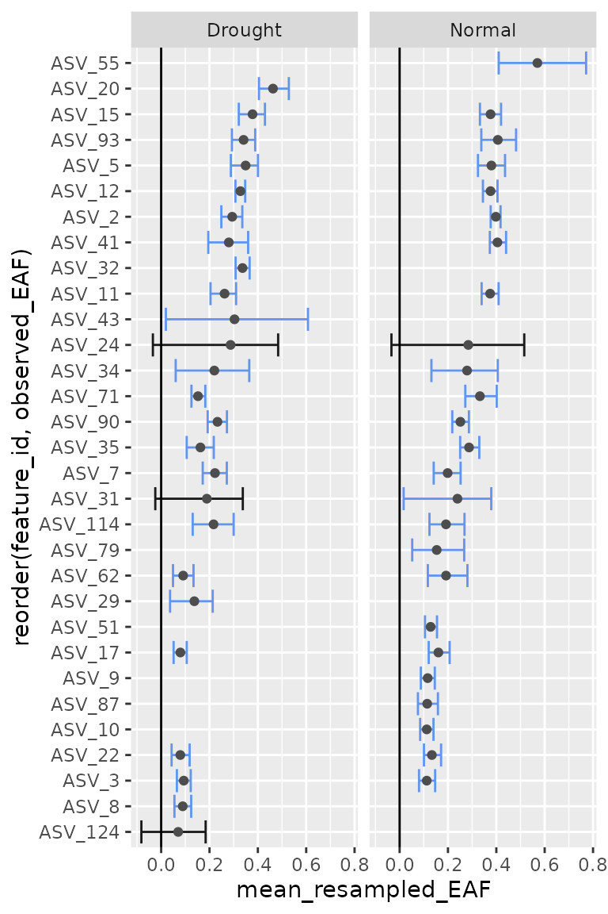
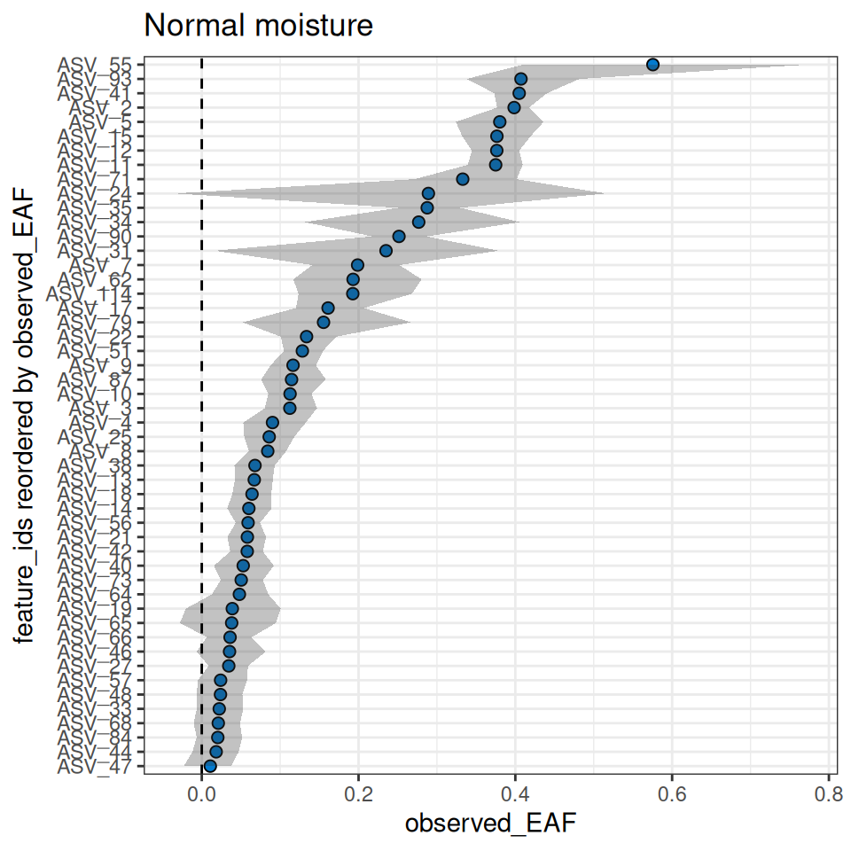
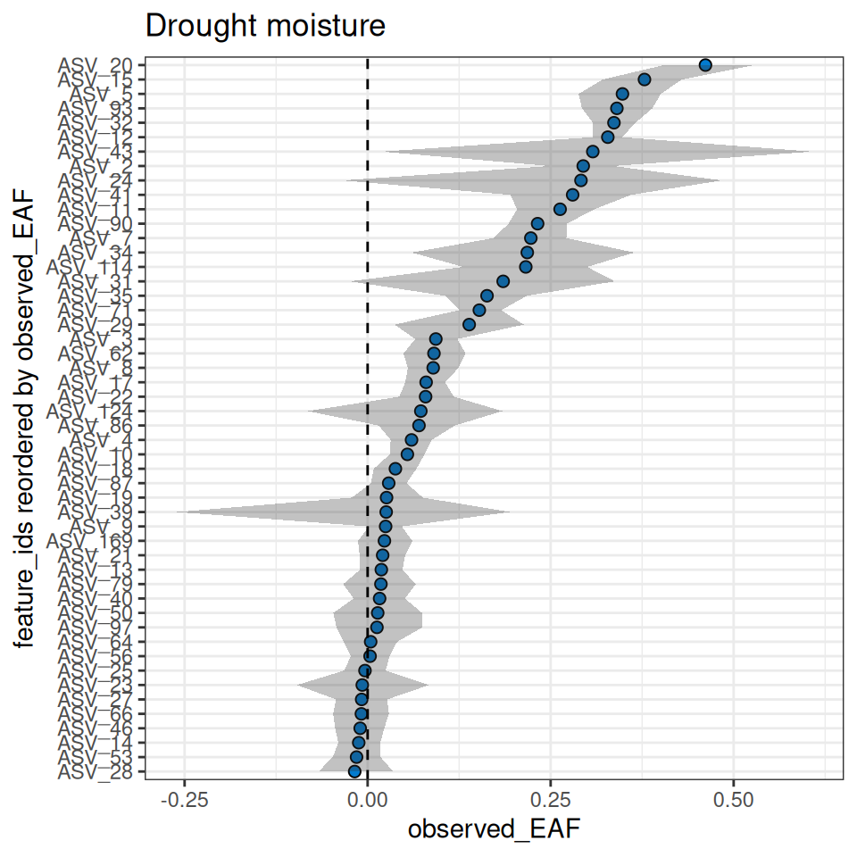
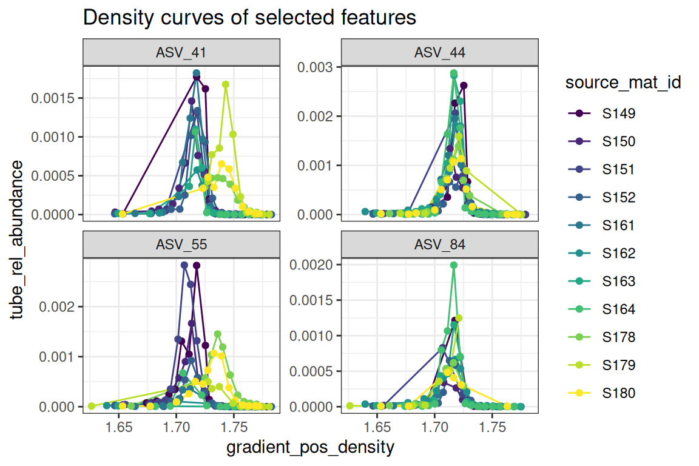
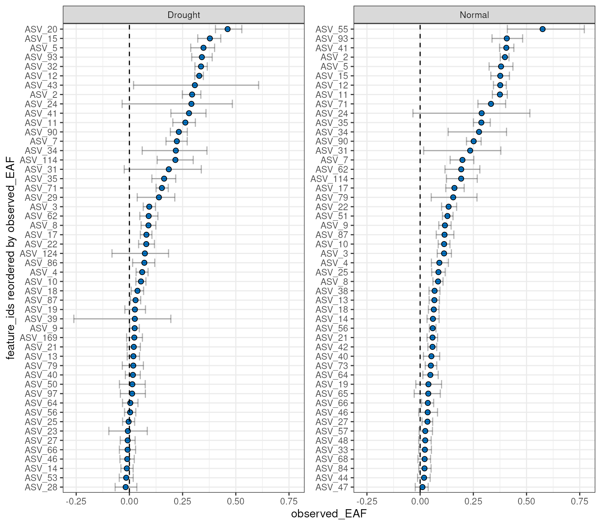

Background
A complete quantitative stable isotope probing (qSIP) workflow using
the qSIP2 package starts with three input files and ends
with calculated excess atom fraction (EAF) values along with a ton of
intermediate data. This vignette will be a high-level walk through of
the major steps with links to more specific vignettes where more detail
is appropriate.
The Input Files
Preparing and formatting the input files is often the most tedious
part of any analysis. Our goal with the rigid (and opinionated)
requirements imposed by qSIP2 will hopefully streamline the
creation of these files, and automated validation checks can remove many
of the common sources of error or confusion.
Source Data
The source data is the highest level of metadata with a row
corresponding to each original experimental or source material object.
An example source dataframe is included in the qSIP2
package called example_source_df.
| source | total_copies_per_g | total_dna | Isotope | Moisture | isotopolog |
|---|---|---|---|---|---|
| S149 | 34838665 | 74.46539 | 12C | Normal | glucose |
| S150 | 53528072 | 109.01522 | 12C | Normal | glucose |
| S151 | 95774992 | 182.16852 | 12C | Normal | glucose |
| S152 | 9126192 | 23.68963 | 12C | Normal | glucose |
| S161 | 41744046 | 67.62552 | 12C | Drought | glucose |
| S162 | 49402713 | 94.21217 | 12C | Drought | glucose |
There are a few required columns for valid source data including a
unique ID (source_mat_id), an isotope and
isotopolog designation for the substrate that had the
label. Additional columns can be added as necessary
(e.g. Moisture) for grouping and filtering later in the
process.
For growth calculations there are three additional requirements -
timepoint, total_abundance and
volume. These are not necessary for the standard EAF
workflow and will instead be addressed in a forthcoming growth
vignette.
Once the dataframe is ready, the next step is to convert it to a
qsip_source_data object. This is one of the main
qSIP2 objects to hold and validate the data. Each of the
required columns of metadata is assigned to a column in your dataframe.
For example, below the “Isotope” column in the dataframe is assigned to
the isotope parameter in the qsip_source_data
object.
source_object <- qsip_source_data(example_source_df,
isotope = "Isotope",
isotopolog = "isotopolog",
source_mat_id = "source"
)
class(source_object)
#> [1] "qSIP2::qsip_source_data" "S7_object"This object modifies some of the column names to standard names as supplied in the above function.
| Original Headers | Modified Headers |
|---|---|
| source | source_mat_id |
| total_copies_per_g | total_copies_per_g |
| total_dna | total_dna |
| Isotope | isotope |
| Moisture | Moisture |
| isotopolog | isotopolog |
If the column names in the dataframe already match the expected standard names, then you can skip assigning them and they should be identified correctly.
A dataframe with the original headers can be recovered using the
get_dataframe() method with the
original_headers = T option.
get_dataframe(source_object, original_headers = T)| Isotope | isotopolog | source | total_copies_per_g | total_dna | Moisture |
|---|---|---|---|---|---|
| 12C | glucose | S149 | 34838665 | 74.46539 | Normal |
| 12C | glucose | S150 | 53528072 | 109.01522 | Normal |
| 12C | glucose | S151 | 95774992 | 182.16852 | Normal |
| 12C | glucose | S152 | 9126192 | 23.68963 | Normal |
| 12C | glucose | S161 | 41744046 | 67.62552 | Drought |
| 12C | glucose | S162 | 49402713 | 94.21217 | Drought |
See vignette("source_data") for more details on working
with source data.
Sample Data
The sample metadata is the next level of detail with one row for each fraction, or one row for each set of fastq files that were sequenced.
| sample | source | Fraction | density_g_ml | dna_conc | avg_16S_g_soil |
|---|---|---|---|---|---|
| 149_F1 | S149 | 1 | 1.778855 | 0.0000000 | 4473.7081 |
| 149_F2 | S149 | 2 | 1.773391 | 0.0000000 | 986.6581 |
| 149_F3 | S149 | 3 | 1.765742 | 0.0000000 | 4002.7026 |
| 149_F4 | S149 | 4 | 1.759185 | 0.0000000 | 3959.7283 |
| 149_F5 | S149 | 5 | 1.752629 | 0.0012413 | 5725.7319 |
| 149_F6 | S149 | 6 | 1.746072 | 0.0128156 | 7566.2722 |
Again, there are several necessary columns for valid sample data,
including a unique sample ID (sample_id), the source they
came from (source_mat_id), the fraction ID
(gradient_position), the fraction density
(gradient_pos_density) and a measure of abundance (total
DNA or qPCR copy number) in that fraction
(gradient_pos_amt).
An additional column that can be derived is the percent abundance of
your total sample that is found in each of the fractions. The
add_gradient_pos_rel_amt() function can help calculate that
by dividing each fraction abundance by the total abundance for each
source and putting it in a gradient_pos_rel_amt column.
But there is no need to do this if you already have the relative amounts calculated in your dataframe.
sample_df <- example_sample_df |>
add_gradient_pos_rel_amt(source_mat_id = "source", amt = "avg_16S_g_soil")| sample | source | Fraction | density_g_ml | dna_conc | avg_16S_g_soil | gradient_pos_rel_amt |
|---|---|---|---|---|---|---|
| 149_F1 | S149 | 1 | 1.778855 | 0.0000000 | 4473.7081 | 0.0001284 |
| 149_F2 | S149 | 2 | 1.773391 | 0.0000000 | 986.6581 | 0.0000283 |
| 149_F3 | S149 | 3 | 1.765742 | 0.0000000 | 4002.7026 | 0.0001149 |
| 149_F4 | S149 | 4 | 1.759185 | 0.0000000 | 3959.7283 | 0.0001137 |
| 149_F5 | S149 | 5 | 1.752629 | 0.0012413 | 5725.7319 | 0.0001643 |
| 149_F6 | S149 | 6 | 1.746072 | 0.0128156 | 7566.2722 | 0.0002172 |
Again, we make a qSIP2 object for this data, this time
as a qsip_sample_data object. The columns in the dataframe
are assigned to the appropriate parameters, and any column names exactly
matching the parameter name will automatically be identified. Similar to
the source_data above, the names in the
sample_data object will be modified from the original names
to the standardized names.
sample_object <- qsip_sample_data(sample_df,
sample_id = "sample",
source_mat_id = "source",
gradient_position = "Fraction",
gradient_pos_density = "density_g_ml",
gradient_pos_amt = "avg_16S_g_soil",
gradient_pos_rel_amt = "gradient_pos_rel_amt"
)
class(sample_object)
#> [1] "qSIP2::qsip_sample_data" "S7_object"See vignette("sample_data") for more information on
working with sample data including the built-in validations.
Feature Data
Finally, the last of the three necessary input files is a feature abundance table, aka “OTU table” or “ASV table”. The format of this dataframe has the unique feature IDs in the first column, and an additional column for each sample. Each row then contains the whole number (non-normalized) counts of each feature in each sample.
For now, the validation step defaults to requiring all values be
counts (positive integers), but other type
options include coverage (for working with MAGs or
metagenomes), relative if you already have relative
abundances and normalized if you have spike-ins or another
method that determines the correct abundance in each sample.
| ASV | 149_F1 | 149_F2 | 149_F3 | 149_F4 | 149_F5 |
|---|---|---|---|---|---|
| ASV_1 | 1245 | 376 | 582 | 1258 | 692 |
| ASV_2 | 1471 | 569 | 830 | 1373 | 737 |
| ASV_3 | 342 | 152 | 211 | 389 | 218 |
| ASV_4 | 288 | 119 | 161 | 294 | 157 |
| ASV_5 | 317 | 108 | 95 | 292 | 164 |
| ASV_6 | 201 | 73 | 130 | 250 | 112 |
feature_object <- qsip_feature_data(example_feature_df,
feature_id = "ASV"
)
class(feature_object)
#> [1] "qSIP2::qsip_feature_data" "S7_object"See vignette("feature_data") for more details.
The qsip_data Object
The qsip_data class is the main workhorse object in the
qSIP2 package. It is built from validated versions of the
three previous objects, and is meant to be a self-contained object with
all of the necessary information for analysis.
qsip_object <- qsip_data(
source_data = source_object,
sample_data = sample_object,
feature_data = feature_object
)
#> There are 15 source_mat_ids, and they are all shared between the source and sample objects
#> There are 284 sample_ids, and they are all shared between the sample and feature objects
class(qsip_object)
#> [1] "qSIP2::qsip_data" "S7_object"This function will report if all source_mat_ids are
shared between the source and sample data, and if all
sample_ids are shared between the sample and feature data.
If it reports there are some unshared ids, you can access them with
get_unshared_ids(qsip_object), but note that it is just a
warning and does not stop the creation of the qSIP object.
Visualizations
Behind the scenes, creation of this object also runs some other calculations, particularly getting the weighted-average density (WAD) for each feature in each source, and also the tube relative abundance of each feature. With these, certain visualizations can be made with built-in functions.
plot_source_wads(qsip_object,
group = "Moisture",
title = "WAD of each source, grouped by Moisture")
plot_sample_curves(qsip_object,
title = "Normalized density curves for each sample",
facet_by = "isotope",
show_wad = F)
Another sanity check is making sure the reported density values are on a reasonably straight line with the gradient position. This can be plotted, and then a Cook’s distance can be calculated to highlight any outliers. Note, the ends of the gradient are often flagged as outliers, although this may not necessarily be the case.
plot_density_outliers(qsip_object)
The design of the qsip_data object is that it is
contains “slots” for each new analysis step. Although you could create a
new object for each step of the workflow, you can assign the output of
each step back to the original object in order to keep everything
together.
Main Workflow
Now that we have a validated qsip_data object, we can
start the main workflow consisting of comparison grouping, filtering,
resampling and finally calculating EAF values.
Comparison Grouping
Your qsip_data object likely contains all of your data,
but you may only want to run comparisons on certain subsets. The
get_comparison_groups() function attempts to identify and
suggest the sources you may want to compare.
get_comparison_groups(qsip_object,
group = "Moisture",
isotope = "isotope",
source_mat_id = "source_mat_id"
)| Moisture | 12C | 13C |
|---|---|---|
| Normal | S149, S150, S151, S152 | S178, S179, S180 |
| Drought | S161, S162, S163, S164 | S200, S201, S202, S203 |
The group argument here is the most important as it will
define the rows that it thinks constitute a comparison. The
isotope argument is what defines the labeled and unlabeled
values for the comparisons. This can be more complex, particularly if
you have more than one isotopolog, and details will be made available in
the future in another vignette.
The first row shows what “Normal” moisture groups we likely want to
use for unlabeled (S149, S150, S151 and S152) to compare to the labeled
(S178, S179 and S180). Sometimes you may also want to compare the
specific labeled samples in a group to all unlabeled. The
qSIP2 package has a convenient way to get those by using
the get_all_by_isotope() function.
get_all_by_isotope(qsip_object, "12C")
#> [1] "S149" "S150" "S151" "S152" "S161" "S162" "S163" "S164"The get_comparison_groups() function is entirely
informational. There is a more automated way to run the qSIP workflow
using the run_comparison_groups() function, and it will be
detailed in another vignette.
Filter Features
The filter features step does two things. First, it is where the set of labeled and unlabeled sources are defined for a specific comparison. Second, it is where you can explicitly say how prevalent a feature must be to be considered “present” in a source. In other words, you define the parameters that a feature must be found enough of the replicate sources, and in enough samples that you can calculate an accurate WAD value for it.
The run_feature_filter() function takes a
qsip_data object and these different parameters allowing
you to precisely tailor your filtering results. The more strict the
filtering, the fewer features that will pass the filter.
qsip_normal <- run_feature_filter(qsip_object,
unlabeled_source_mat_ids = get_all_by_isotope(qsip_object, "12C"),
labeled_source_mat_ids = c("S178", "S179", "S180"),
min_unlabeled_sources = 6,
min_labeled_sources = 3,
min_unlabeled_fractions = 6,
min_labeled_fractions = 6
)
#> There are initially 2030 unique feature_ids
#> 1705 of these have abundance in at least one fraction of one source_mat_id
#> =+=+=+=+=+=+=+=+=+=+=+=+=+=+=+=+=+=+=+=+=+=+=+=+=+
#> Filtering feature_ids by fraction...
#> 1519 unlabeled and 1417 labeled feature_ids were found in zero fractions in at least one source_mat_id
#> 1440 unlabeled and 830 labeled feature_ids were found in too few fractions in at least one source_mat_id
#> 299 unlabeled and 209 labeled feature_ids passed the fraction filter
#> In total, 346 unique feature_ids passed the fraction filtering requirements...
#> =+=+=+=+=+=+=+=+=+=+=+=+=+=+=+=+=+=+=+=+=+=+=+=+=+
#> Filtering feature_ids by source...
#> 47 unlabeled and 137 labeled feature_ids failed the source filter because they were found in zero sources
#> 196 unlabeled and 127 labeled feature_ids failed the source filter because they were found in too few sources
#> 103 unlabeled and 82 labeled feature_ids passed the source filter
#> =+=+=+=+=+=+=+=+=+=+=+=+=+=+=+=+=+=+=+=+=+=+=+=+=+
#> In total, 64 unique feature_ids passed all fraction and source filtering requirementsNote, although I said earlier you can overwrite your
qsip_data objects as you go, here it might make sense to
create two versions for the moisture treatments. We’ll take the original
qsip_object and save the filtered Normal dataset to
qsip_normal', and the Drought toqsip_drought`.
Of the 1,705 features found in the “Normal” data, we can see our
rather strict filtering removed all but 64 features from the dataset. We
can visualize these results on a per-source basis with the
plot_filter_results() function.
plot_filter_results(qsip_normal)
Although a large number of features were removed, we can tell that the 64 that remained actually still make up a large proportion of the total abundance in each sample. In A above, the retained features (in blue) make up ~75-85% of the total data, while the removed data (orange) is the remaining ~15-25%.
In B, we can see that a surprisingly large number of
features are found 0 times in many sources (gray) and will therefore
never be present regardless of our filtering choices. And although there
are are ~100-200 features that passed the filtering requirements (blue),
our requirement that min_unlabeled_sources = 6 and
min_labeled_sources = 3 means that only the features
present in many of the blue slices will be retained, leaving only 64
total.
Let’s do the same comparison with the drought samples.
qsip_drought <- run_feature_filter(qsip_object,
unlabeled_source_mat_ids = get_all_by_isotope(qsip_object, "12C"),
labeled_source_mat_ids = c("S200", "S201", "S202", "S203"),
min_unlabeled_sources = 6,
min_labeled_sources = 3,
min_unlabeled_fractions = 6,
min_labeled_fractions = 6
)
#> There are initially 2030 unique feature_ids
#> 1877 of these have abundance in at least one fraction of one source_mat_id
#> =+=+=+=+=+=+=+=+=+=+=+=+=+=+=+=+=+=+=+=+=+=+=+=+=+
#> Filtering feature_ids by fraction...
#> 1691 unlabeled and 1558 labeled feature_ids were found in zero fractions in at least one source_mat_id
#> 1440 unlabeled and 1212 labeled feature_ids were found in too few fractions in at least one source_mat_id
#> 299 unlabeled and 285 labeled feature_ids passed the fraction filter
#> In total, 367 unique feature_ids passed the fraction filtering requirements...
#> =+=+=+=+=+=+=+=+=+=+=+=+=+=+=+=+=+=+=+=+=+=+=+=+=+
#> Filtering feature_ids by source...
#> 68 unlabeled and 82 labeled feature_ids failed the source filter because they were found in zero sources
#> 196 unlabeled and 171 labeled feature_ids failed the source filter because they were found in too few sources
#> 103 unlabeled and 114 labeled feature_ids passed the source filter
#> =+=+=+=+=+=+=+=+=+=+=+=+=+=+=+=+=+=+=+=+=+=+=+=+=+
#> In total, 89 unique feature_ids passed all fraction and source filtering requirementsAnd only 89 features were retained in the Drought dataset.
plot_filter_results(qsip_drought)
Strictly speaking, there is no requirement to do strict filtering,
and it is possible to execute run_feature_filter() with all
parameters set to 1. Filtering was originally recommended
because it dramatically sped up the compute time, but running all vs. a
subset of features in qSIP2 has a minimal impact. Further,
setting all values to 1 and utilizing the
allow_failures flag in the resampling step can provide an
alternative way of deciding which features to keep, rather than just
their prevalence amongst sources/samples. More information is provided
in the Resampling section below, or the
vignette("resampling") vignette.
Importantly, since the relative abundances have already been calculated for each feature, the subsequent steps in the qSIP pipeline keep each feature’s computations independent, and the results for a specific feature will be identical regardless of whether other features are included or filtered out.
Resampling
The weighted average density (WAD) values were automatically
calculated during the creation of the qsip_data object
earlier. In order to calculate the confidence interval for the EAF
values, we first need to run a resampling/bootstrapping procedure on the
WAD values. For example, a feature found in 6 unlabeled sources will
have 6 WAD values, and these 6 WAD values are resampled many times to
obtain bootstrapped mean WAD values.
qsip_normal <- run_resampling(qsip_normal,
resamples = 1000,
with_seed = 17,
progress = FALSE
)As this step requires some random sampling it is good practice to set the “seed”. Rather than doing this outside of the function, you can pass the seed as an argument. If you leave blank, it will generate a random seed. The seed will generate the same results each time you run the resampling process.
qsip_normal_17_again <- run_resampling(qsip_normal,
resamples = 1000,
with_seed = 17,
progress = FALSE
)
# two runs are identical
identical(qsip_normal, qsip_normal_17_again)
#> [1] TRUE
identical(qsip_normal@resamples$l[[334]], qsip_normal_17_again@resamples$l[[334]])
#> [1] TRUE
# but individual resamplings within are different
identical(qsip_normal@resamples$l[[1]], qsip_normal@resamples$l[[2]])
#> [1] FALSERessampling of the drought dataset. Notice at this step we are
overwriting the original qsip_drought with the results of
run_resampling(), rather than creating new objects.
qsip_drought <- run_resampling(qsip_drought,
resamples = 1000,
with_seed = 17,
progress = FALSE
)It is possible to get a resampling error if your filtering is too
strict. If so, consult the vignette("resampling") vignette
and consider running with allow_failures = T.
EAF Calculations
And we are finally at the last main step, calculating and summarizing
the excess atom fraction (EAF) values. There are two functions to run,
the first (run_EAF_calculations()) that calculate EAF for
the observed data and all resamplings, and the second
(summarize_EAF_values()) that summarizes that data at a
chosen confidence interval. These are split into two functions simply
because the run_EAF_calculations() can take a little
longer, allowing different parameters to be tried in
summarize_EAF_values() without having to recalculate
everything.
We’ll also mutate() to add the original Moisture
condition to each dataframe before we combine them.
qsip_normal <- run_EAF_calculations(qsip_normal)
qsip_drought <- run_EAF_calculations(qsip_drought)
normal <- summarize_EAF_values(qsip_normal, confidence = 0.9) |>
mutate(Moisture = "Normal")
#> Confidence level = 0.9
drought <- summarize_EAF_values(qsip_drought, confidence = 0.9) |>
mutate(Moisture = "Drought")
#> Confidence level = 0.9
eaf <- rbind(normal, drought)We can plot the top 50 by each moisture condition.
plot_EAF_values(qsip_normal,
top = 50,
confidence = 0.9,
error = "ribbon",
title = "Normal moisture")
#> Confidence level = 0.9
plot_EAF_values(qsip_drought,
top = 50,
confidence = 0.9,
error = "ribbon",
title = "Drought moisture")
#> Confidence level = 0.9
The plot_feature_curves() function allows us to plot the
tube relative abundances for specific feature IDs. Let’s look at two
with high EAF values, and two with low values.
plot_feature_curves(qsip_normal,
feature_ids = c("ASV_55", "ASV_84", "ASV_41", "ASV_44"),
title = "Density curves of selected features"
)
Working with multiple qSIP objects (preview)
It is possible to work with multiple qsip_data objects
if they are in a list. This will be detailed in a forthcoming vignette,
but here is a sneak peak where we can use the existing
summarize_EAF_values() or plot_EAF_values()
functions.
qsip_list = list("Normal" = qsip_normal,
"Drought" = qsip_drought)
summarize_EAF_values(qsip_list)#> Confidence level = 0.9| group | feature_id | observed_EAF | mean_resampled_EAF | lower | upper | labeled_resamples | unlabeled_resamples | labeled_sources | unlabeled_sources |
|---|---|---|---|---|---|---|---|---|---|
| Normal | ASV_1 | -0.0153107 | -0.0157044 | -0.0516543 | 0.0236518 | 1000 | 1000 | 3 | 8 |
| Drought | ASV_1 | -0.0333856 | -0.0330890 | -0.0808509 | 0.0161212 | 1000 | 1000 | 4 | 8 |
| Normal | ASV_10 | 0.1126260 | 0.1121874 | 0.0848992 | 0.1400368 | 1000 | 1000 | 3 | 8 |
| Drought | ASV_10 | 0.0543136 | 0.0541364 | 0.0303215 | 0.0776436 | 1000 | 1000 | 4 | 8 |
| Drought | ASV_100 | -0.0892684 | -0.0895131 | -0.1488307 | -0.0349891 | 1000 | 1000 | 3 | 7 |
| Drought | ASV_102 | -0.0407091 | -0.0407609 | -0.0907747 | 0.0088904 | 1000 | 1000 | 4 | 8 |
| Normal | ASV_11 | 0.3749260 | 0.3743849 | 0.3392976 | 0.4094196 | 1000 | 1000 | 3 | 8 |
| Drought | ASV_11 | 0.2629470 | 0.2622983 | 0.2041474 | 0.3099201 | 1000 | 1000 | 4 | 8 |
| Normal | ASV_114 | 0.1926455 | 0.1918100 | 0.1234247 | 0.2683575 | 1000 | 1000 | 3 | 7 |
| Drought | ASV_114 | 0.2160639 | 0.2167657 | 0.1304984 | 0.2998898 | 1000 | 1000 | 3 | 7 |
plot_EAF_values(qsip_list,
top = 50,
confidence = 0.9,
error = "bar")
#> Confidence level = 0.9
Piped Workflow
Although the workflow is often easier to understand and troubleshoot when broken into individual steps, it is possible to run the entire workflow in a single pipe.
For example, the normal moisture data could be filtered, resampled and have EAF values calculated in a single pipe.
# example code, not executed. Default values are not shown.
qsip_normal <- run_feature_filter(qsip_object,
unlabeled_source_mat_ids = get_all_by_isotope(qsip_object, "12C"),
labeled_source_mat_ids = c("S178", "S179", "S180"),
min_unlabeled_sources = 6,
min_labeled_sources = 3
) |>
run_resampling() |>
run_EAF_calculations()